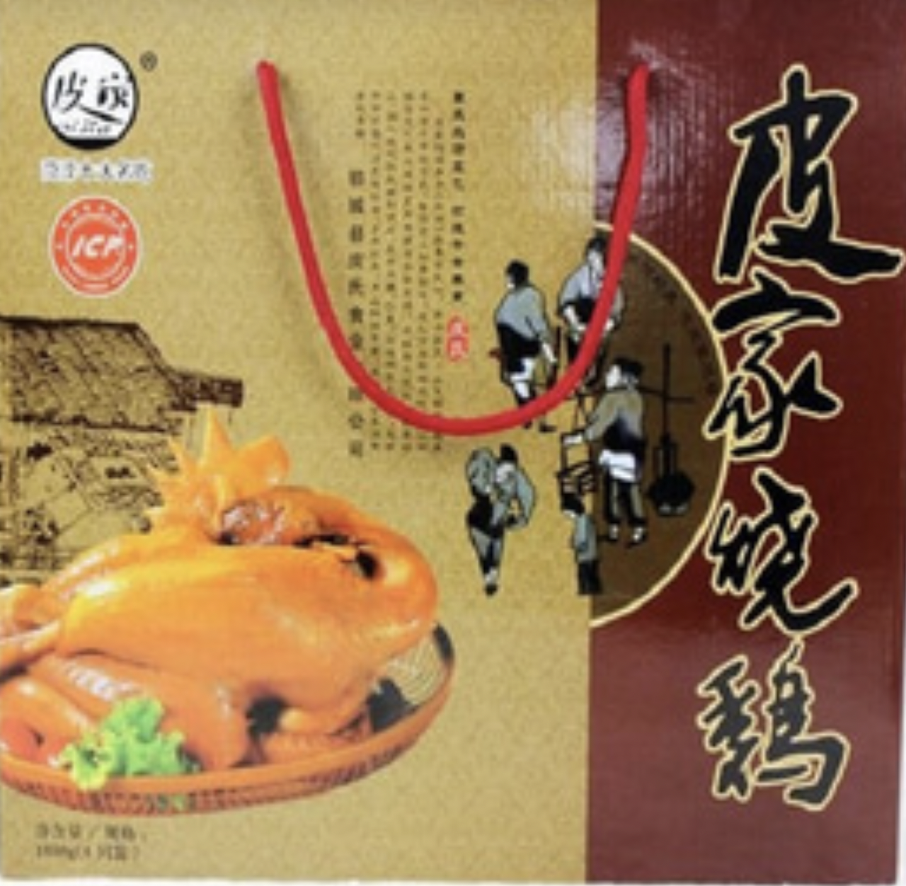

正宗山东郓城特产：皮家烧鸡
发布时间: 2022-06-07 485 次浏览
-
基本介绍
皮家烧鸡系郓城县侯集镇子房墓村皮姓烧鸡专业户的传世产品，不仅在郓城享有盛誉，且远销北京、乌鲁木齐等城市。其色泽酱红、鲜艳、刚出锅时数丈远即可闻到浓郁的烧鸡香味。
营养价值
鸡肉含有维生素C、E等，蛋白质的含量比例较高，种类多，而且消化率高，很容易被人体吸收利用鸡肉，有增强体力、强壮身体的作用，另外含有对人体生发育有重要作用的磷脂类，是中国人膳食结构中脂肪和磷脂的重要来源之一。
鸡肉对营养不良、畏寒怕冷、乏力疲劳、月经不调、贫血、虚弱等有很好的食疗作用。祖国医学认为，鸡肉有温中益气、补虚填精、健脾胃、活血脉、强筋骨的功效。
产品特点
它的突出特点是鲜、香、嫩、烂，味道里外一致，口感香美。
历史由来
山东郓城皮家烧鸡有限公司成立于一九三九年， 皮家烧鸡起源于《水浒》中宋江的故乡，历史悠久。创始人皮自祥，是位德高望重很有发展眼光的生意人，在战乱时期，不断进取，穿梭于各集市之间，解放之后，集百家之长，创建了自己独有的特色味道，名传黄河两岸。
制作方法
其传统加工方法是：将生鸡先涂抹蜂蜜，后用油炸，再装上作料，放入香汤内蒸煮，经四五个小时方可出锅。
获得荣誉
80年代在《大众日报》、《山东电视台》等10多家新闻刊物曾经报道。2004年11月经济发展联合会，授予“地方名吃”荣誉称号，2005年7月获得中国食品研究会、《世界蓝天杯》十大驰名标志品牌。
黄河文化旅游宣传平台
联系电话: 17753010787
版权所有：山东大学技术团队
技术支持：山东大学技术团队